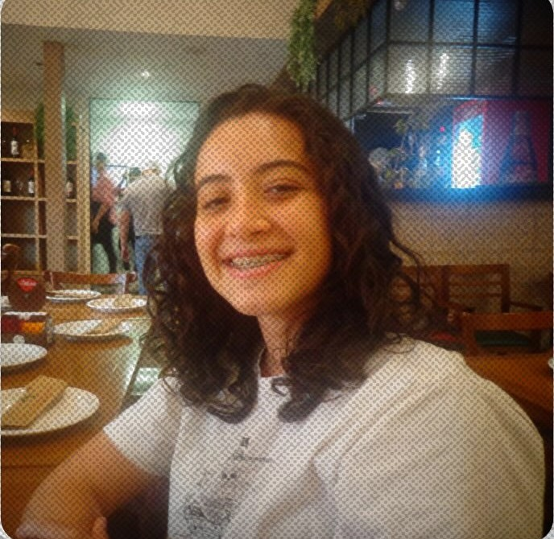

Recepção · CC e TADS · 2026
Recepção
de calouros
Os dois cursos são do DEPCOMP (Departamento de Computação) e são representados pelo mesmo diretório acadêmico, o DAC.
- Ciência da Computação (CC): aulas principalmente no período da manhã e da tarde.
- TADS: curso noturno. Algumas pessoas chamam de “ADS”, mas o nome oficial na UERJ ZO é TADS.
Algumas disciplinas de TADS valem como eletivas para CC e vice-versa. As duas turmas compartilham professores e, às vezes, atividades e grupos.
- TADS: as aulas costumam ocorrer entre 18h e 22h, de segunda a sexta, mas nem todos os dias têm aula em todos os horários.
- CC: as aulas podem ocupar a manhã e a tarde, aproximadamente entre 7h e 17h, conforme a grade do semestre.
- A grade oficial costuma sair perto do início das aulas. Antes disso, o que circula é uma previsão e pode mudar.
- Em geral, cada disciplina tem uma turma só, então quase não há como trocar de horário.
- No primeiro período dá para remover disciplinas, mas é preciso ficar com no mínimo 3. Não dá para incluir ou substituir.
- A versão definitiva da grade sai com o RID.
Se algum dia da grade for impossível por causa de trabalho ou outro compromisso, procure o DAC: os veteranos ajudam a conversar com os professores.
- Faça a pré-matrícula e entregue a documentação no prazo do edital.
- Para muitos ingressantes, a inscrição nas disciplinas é feita presencialmente no dia da matrícula. Leve um documento oficial com foto, de preferência o original: RG, CNH, passaporte, carteira de trabalho ou carteira de estudante com foto.
- Guarde o comprovante entregue no atendimento.
- Confira depois se as disciplinas aparecem no Aluno Online. Se ainda não apareceram, pode ser só demora do sistema.
- Quem já é aluno faz a rematrícula e a inscrição em disciplinas pelo Aluno Online, no período do calendário acadêmico.
Calouros que ingressam no segundo semestre podem não conseguir acessar o Aluno Online até o início do período. Isso é normal: se a inscrição já foi feita presencialmente, basta aguardar.
- Acesse sig.uerj.br e crie seu ID Único.
- Acesse asce.uerj.br e crie seu e-mail institucional.
- Entre no webmail em webmail.uerj.br/SOGo com esse e-mail e a mesma senha do ID Único.
- Ative o pacote Office 365, se for usar.
Os professores do DEPCOMP usam bastante Teams e Classroom. O e-mail institucional @uerj.br é a conta que dá acesso a esses serviços, então crie o quanto antes.
Se houver problema de cadastro ou acesso, escreva para atendimento.depaac@uerj.br.
Notebook não é obrigatório, mas ajuda bastante.
- Quem não tem pode usar os computadores da biblioteca e os dos laboratórios. Os dos laboratórios costumam ser melhores.
- Para CC e TADS não há lista de material obrigatório para comprar antes do primeiro dia. Espere as orientações dos professores.
- Se for comprar algo, priorize um computador que rode com folga as ferramentas do curso. Não é necessário gastar muito no primeiro semestre.
O campus fica na Zona Oeste do Rio e há transporte gratuito da faculdade:
- Van/ônibus da UERJ: sai da estação de Campo Grande, em frente ao Rei dos Laticínios.
- Na volta, o embarque é atrás do prédio, perto da quadra e da piscina.
- Não precisa de documento nem pagamento: qualquer aluno pode usar.
- Os horários são divulgados no Instagram da UERJ ZO e nos canais da van.
De transporte convencional, linhas como 22, 69 e 804 passam perto. Uma opção é descer entre o Bela Vida III e o Craque do Pão, descer a rua e chegar ao campus. Também existem grupos de carona e de van organizados pelos estudantes.
Sim, o campus passou a ter RU (Restaurante Universitário).
- Com a chegada do RU, o auxílio alimentação deixou de ser pago.
- Alunos de qualquer campus podem usar o RU do Maracanã.
- Os valores e as regras para cotistas e não cotistas mudam. Confirme o valor atual no próprio RU ou nos canais da UERJ antes de contar com um preço fixo.
Depende da sua forma de ingresso e da sua situação socioeconômica.
- Cotistas: têm direito à Bolsa Permanência de forma automática. Basta cadastrar os dados bancários de uma conta individual no Bradesco no Aluno Online. Não é preciso fazer solicitação semestral.
- Ampla concorrência: pode solicitar auxílios pela Avaliação Socioeconômica (ASE), que costuma abrir uma vez por ano. Acompanhe o site da PR4 e o Instagram da UERJ.
- JAE Gratuidade: número limitado de passagens, não vale para metrô. Pode ser combinado com a tarifa social do RioCard.
- Auxílio transporte da UERJ: alternativa para quem não usa o JAE.
- Auxílio material didático: pago uma vez por ano, com valor fixo.
Regras, valores e datas mudam. Confirme sempre no Aluno Online, no site da PR4 e nos canais do DAC.
- A primeira semana costuma ser de acolhida e integração, sem aulas normais.
- Há a acolhida institucional, organizada pelo DCE, e a acolhida do curso, com a coordenação e os veteranos.
- O trote acontece nos primeiros dias e é organizado pela comissão de recepção. A participação não é obrigatória.
- As datas, horários e cores de roupa são divulgados no Instagram @comissaouerjzo e nos canais de calouros.
- A recepção de CC e TADS é conjunta. Depois, cada turma e cada disciplina pode ter seu próprio canal ou comunidade.
- O DAC (@dac.uerjzo) representa os alunos de CC e TADS e ajuda com grade, professores, eventos e merch.
Sim. Em CC e TADS, o estágio obrigatório aparece por volta do 7º período.
Antes de se preocupar com estágio, confirme o fluxograma oficial do seu curso, a matriz curricular vigente da sua turma e as orientações da coordenação no início do semestre.
Estágio não obrigatório pode ser feito antes, desde que compatível com a grade e com a carga horária do curso.
Dicas rápidas
-
75% de frequência
Frequência mínima por disciplina. Faltar mais do que 25% pode reprovar por falta.
-
Trancamento
Normalmente não é possível no primeiro período. Se precisar, procure a coordenação.
-
Reaproveitamento
Analisado pela coordenação, comparando ementa e carga horária. O período de solicitação sai no calendário.
-
Matemática básica
Revise frações, produtos notáveis, fatoração e manipulação algébrica. Ajuda muito em Cálculo e Matemática Discreta.
-
Construção de Algoritmos
A disciplina começa com Portugol e depois avança para C.
-
Coordenação
CC e TADS têm coordenações próprias. Confirme nomes e contatos atuais no site da UERJ.
Gestão atual
Nossos
membros
Quem constrói o DAC todos os dias. Arrasta para o lado e conhece a diretoria.
-
Giorgio Bazet
Presidente
-
Matheus Rebello
Vice-presidente
-

Talita Toledo
Secretária-geral
-
Otávio Azevedo
Tesoureiro-geral
-
André Mateus
Tesoureiro
-
Lucas Riquelme
Secretário
-
Juliana Tenório
Diretora de Marketing
-
Irys Eloisa
Assistente de Marketing
-
Daniel Filipe
Diretor de Comunicações
-
Viner Barreto
Diretor de Relações Institucionais
-
Miguel Miranda
Diretor de Assuntos Acadêmicos
-
Lucas Campos
Diretor de Projetos
-
Eduardo Barbosa
Assistente de Comunicação
-
Yana Marques
Assistente de Eventos
Quem somos
Sobre o
DAC
Diretório Acadêmico de Computação
O Diretório Acadêmico de Computação (DAC - UERJZO) é a entidade de representação estudantil dos alunos dos cursos de Ciência da Computação e Tecnologia em Análise e Desenvolvimento de Sistemas (TADS) da Faculdade de Ciências Exatas e Engenharia (FCEE) no Campus Zona Oeste da UERJ.
Somos a ponte entre a comunidade discente, as coordenações de curso e a direção universitária. Atuamos diariamente para acolher os estudantes, defender os seus direitos, organizar eventos acadêmicos, culturais e de integração, além de incentivar o desenvolvimento profissional e pessoal de cada aluno durante a jornada acadêmica.
Nossa missão
Construir uma vivência universitária plural, integrada e transformadora, fortalecendo a comunidade de Computação na UERJ Zona Oeste.
Pilares de atuação
-
Representatividade & voz ativa
Garantir que as demandas, dúvidas e direitos dos estudantes dos cursos de Ciência da Computação e TADS sejam ouvidos e atendidos.
-
Integração & acolhimento
Promover a união entre as turmas, auxiliando os calouros na adaptação e criando um ambiente acadêmico colaborativo e acolhedor.
-
Desenvolvimento acadêmico & profissional
Organizar semanas acadêmicas, workshops, palestras, hackathons e parcerias para conectar os estudantes com o mercado de tecnologia e a pesquisa.
-
Permanência & qualidade estudantil
Lutar continuamente por melhorias de infraestrutura, ensino de excelência e suporte à permanência estudantil no campus.
Dúvidas
Perguntas
frequentes
O essencial sobre o DAC, o merch e a rotina no campus.
O Diretório Acadêmico de Computação é a entidade que representa os estudantes de Computação da UERJ Zona Oeste. Organizamos eventos, apoiamos demandas do curso e produzimos o merch oficial.
Todo estudante de Computação da UERJ ZO pode participar das atividades e assembleias. Para integrar a diretoria, acompanhe as convocações publicadas no Instagram.
As encomendas são feitas pelo Instagram @dac.uerjzo. Chame no direct para conferir tamanhos, valores e prazo de entrega.
No campus da UERJ Zona Oeste, em Campo Grande, Rio de Janeiro. A sala e os horários de atendimento são divulgados no Instagram do DAC.
Siga @dac.uerjzo. A recepção, as palestras, os workshops e as assembleias são anunciados por lá.
Pelo direct do Instagram ou pessoalmente no campus. Para assuntos formais, procure a presidência ou a secretaria.